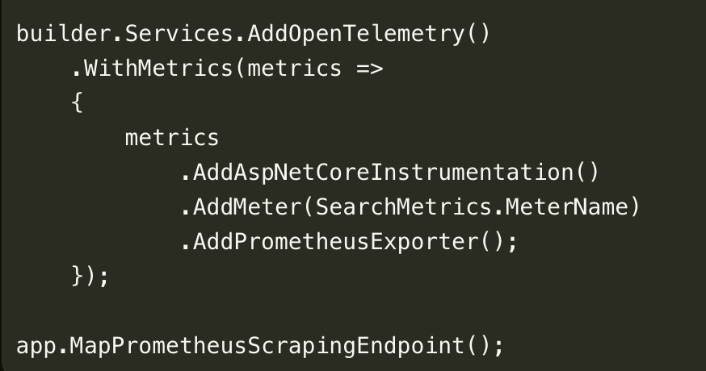
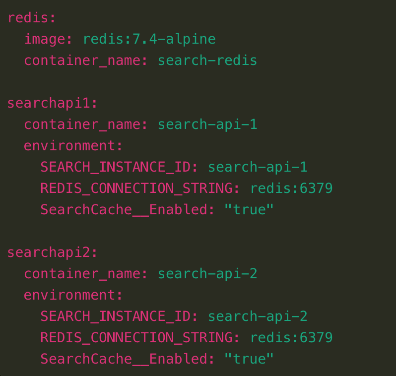
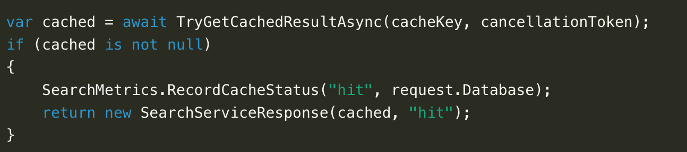
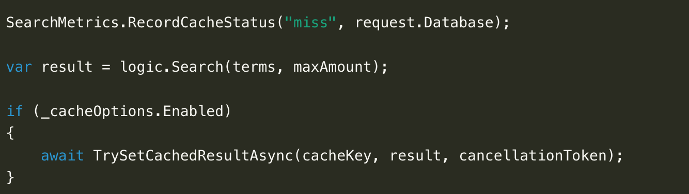

SearchProject v2 · arkitekturfortælling
1 · Projektdefinition
Hvad vi skulle levere – og hvad demoen viser
Projektet blev defineret som videreudvikling af eksisterende SearchProject med fokus på caching, performance/failover og database-skalering i driftsnær kontekst.
Formål
- Forbedre svartid på gentagne søgninger
- Vise robust API-adfærd ved instansændringer
- Dokumentere beslutninger med målinger
Fokusområder
Caching som komponent
Performance/latency/failover
Z-akse retning for data
Kørende drift/demo
Leverancer (check)
| Leverance | Status i præsentationen |
|---|
| Kørende demonstration | Vises live |
| Dokumenterede principper | Slide 2 + noter |
| Arkitekturdiagrammer | Slide 3-4 |
| Testrapport/resultater | Slide 6-8 |
Talenote: Formålet med slide 1 er at lave en tydelig kontrakt med censor: hvad leverer vi, og hvordan beviser vi det. Hold introen rolig og styrende: “Det her er en leverancepræsentation, ikke en feature-liste.” Peg på tabellen som jeres narrative rygsøjle for resten af oplægget, så publikum ved præcis hvad de skal lede efter i hvert næste slide.
2 · Arkitekturprincipper
Hvilke principper vi brugte, hvorfor og hvordan
Hvert princip er koblet til et konkret arkitekturvalg og en verificerbar test/demonstration.
| Princip | Hvorfor vigtigt | Hvordan implementeret | Hvordan bevist |
|---|
| Modulær serviceopdeling | Tydelige ansvar og nemmere drift | WebApp, Nginx, SearchApi, Redis, Postgres | C4-flow + pod/service-opdeling |
| X-akse skalering | Håndtere belastning og instansfejl | SearchApi deployment med 2 replikaer | Scale-down/scale-up uden endpoint-skift |
| Caching for performance | Reducere dyre gentagne opslag | Redis cache-aside med TTL | Hit/miss + søgetid i dashboard |
| Design to be monitored | Fra antagelser til dokumentation | OpenTelemetry + Prometheus + Grafana | Live metrics under testfaser |
| Build vs. buy | Fokus på arkitektur frem for platformkode | Helm, kube-prometheus-stack, Redis/Nginx | Reproducerbar startup + driftsscripts |

Vi kigger i SearchApi/Program.cs: her sættes OpenTelemetry op, egne metrics registreres, og API'et eksponerer /metrics til Prometheus.

Vi kigger i docker-compose.yml: her kan man se Redis-containeren og at begge SearchApi-instanser peger på samme Redis og har cache slået til.
Talenote: Formålet med slide 2 er at vise faglig metode: principperne styrer beslutningerne. Brug rytmen “problem → valg → bevis” i hver række. Denne slide fungerer også som jeres forsvar, hvis I bliver udfordret: I kan altid gå tilbage og placere et spørgsmål under et princip i stedet for at svare løst. Når I viser venstre screenshot, så sig at monitored design findes direkte i API-koden: vi måler standardtrafik, vi måler vores egne cache-events, og vi gør dem tilgængelige for Prometheus. Når I viser højre screenshot, så sig at Redis heller ikke kun er tegnet i arkitekturen: i Compose kan man se, at begge API-instanser faktisk er koblet på samme Redis og har cache slået til. Pointen er, at principperne kan spores helt ned i den konkrete opsætning.
3 · C4 containerdiagram
Nuværende løsning: ansvar og dataflow
Hvad diagrammet viser
- Klienttrafik går gennem én API-indgang (Nginx)
- SearchApi er stateless og kan replikeres
- Redis er cachelag, Postgres er primær datakilde
- Indexer skriver data; API læser data
Hvad der er vigtigt i eksamen
- Hvorfor komponenterne er adskilt
- Hvor cache-beslutningen træffes
- Hvor systemet kan skaleres horisontalt
- Hvor målinger opsamles i drift
Kernepointe: Redis optimerer læsninger; Postgres bevarer dataansvaret.
Talenote: Formålet med slide 3 er at bygge en fælles mental model, før I viser tests. Brug pegefortælling i fast rækkefølge: klient → indgang → API → cache/data. Den meta-vigtige pointe er adskillelsen af ansvar: Postgres ejer data, Redis ejer hastighed. Når den pointe sidder, bliver resten af præsentationen lettere at forstå.
4 · Kubernetes driftsdiagram
Driftsopsætning: hvordan løsningen køres og observeres
Kørende komponenter
- Deployment: SearchApi med 2 replikaer
- Service: stabil intern adresse til API-laget
- Redis/Postgres: data- og cachelag i samme namespace
- Nginx: fælles endpoint mod klient/web
Observability
- /metrics: eksponeres fra SearchApi
- ServiceMonitor: Prometheus scraper automatisk
- Grafana: viser hit/miss, søgetid, replicas, health
- Scripts: skaber kontrollerede testfaser
Afgrænsning: Minikube bruges som lokalt testmiljø. Pointen er driftsprincipper og måleevne, ikke fuld produktions-HA.
Talenote: Formålet med slide 4 er at flytte fortællingen fra “design” til “drift”. Undgå abstrakt cloud-snak: nævn konkrete objekter og deres rolle. Den meta-besked I vil sende er modenhed: I ved både hvad jeres opsætning kan i dag, og hvad den ikke påstår at kunne endnu.
5 · Redis strategi
Redis som cachelag: mindre databaseafhængighed
Redis er ikke “ægte” z-akse-skalering af databasen, men det flytter en del læsebelastning væk fra den stateful Postgres-komponent og gør løsningen mere robust under gentagne søgninger.
Aflastning- Cache hits springer databaseopslag over
- Begge API-replikaer deler samme cache
- Stateful database bliver mindre presset ved hot queries
Fallback begge veje- Redis nede: API falder tilbage til Postgres
- Database presset: cache hits kan stadig serveres fra Redis
- Performance falder, men arkitekturen har et ekstra lag
Næste modenhed- Redis master/replica eller managed Redis
- Postgres read replicas / managed database
- Build vs. buy: betale cloud-provider for HA og drift

Vi kigger i SearchApi/Services/SearchService.cs: hit-vejen, hvor resultatet allerede findes i Redis og returneres direkte uden nyt opslag i Postgres.

Vi kigger i SearchApi/Services/SearchService.cs: miss-vejen, hvor vi laver den normale søgning og gemmer resultatet bagefter, så næste request bliver billigere.
Vigtig skelnen: Postgres er stadig source of truth. Redis er et performance- og aflastningslag, der gør os mindre afhængige af databasen i de scenarier, hvor data allerede er cached.
Talenote: Formålet med slide 5 er at forklare Redis uden at overpåstå. Sig at det ikke er fuld z-akse-skalering, fordi vi ikke partitionerer eller replikerer databasen rigtigt. Men det giver en z-akse-lignende aflastning: noget læsearbejde flyttes væk fra den stateful database og over i et separat cachelag. Når I viser venstre snippet, så sig: “Her ser vi cache hit-vejen. Hvis resultatet allerede ligger i Redis, registrerer vi et hit og returnerer direkte uden nyt databaseopslag.” Når I viser højre snippet, så sig: “Her ser vi miss-vejen. Når resultatet ikke ligger i cache, laver vi den normale søgning og gemmer resultatet bagefter, så næste identiske request bliver billigere.” Pointen er ikke at læse koden linje for linje, men at bruge den som bevis for cache-aside-flowet. Slut med fallback-fortællingen: hvis Redis fejler, kan Postgres stadig svare; hvis Postgres er presset, kan hot-cache stadig svare. Næste rigtige skridt er managed Redis/managed database eller master-replica/read-replica setup, hvilket også er et build-vs-buy valg.
6 · Performance testdesign
Undervisningsnær test: kriterier, miljø, belastning, evaluering
| Trin | Vores opsætning |
|---|
| Succeskriterium | Gentagne søgninger skal give flere cache hits og lavere søgetid end cold-cache. |
| Testmiljø | Minikube med Nginx, SearchApi x2, Redis, Postgres, Prometheus og Grafana. |
| Belastningsmodel | Cold-cache, hot-cache, redis-down og API scale-faser køres sekventielt. |
| Metrikker | Request rate, HTTP-status, search duration, cache hit/miss ratio, aktive replikaer. |
| Evaluering | Dashboardet skal tydeligt afspejle hver fase og bekræfte/afkræfte hypotesen. |
API-metrikker
Requests/s, statuskoder, responstid
Applikationsmetrikker
Cache hit/miss, search duration
Driftsmetrikker
Replicas up/down, health i runtime
Talenote: Formålet med slide 6 er at vise, at testene er designet og ikke improviseret. Fremhæv rækkefølgen: kriterie → miljø → belastning → måling → evaluering. Meta-punktet er, at jeres konklusioner bliver reproducerbare, fordi de hviler på metode frem for enkeltstående målinger.
7 · Resultater
Seneste testkørsel: hvad viste data?
Cache-performance (30/30 requests)
- Cold-cache: avg 10.84 ms, miss = 30/30
- Hot-cache: avg 5.16 ms, hit = 30/30
- Fortolkning: hit-scenariet var tydeligt billigere
Scale/failover (10/40/10 requests)
- Før scale-down: 10/10 succes (2 instanser)
- Under 1 replika: 40/40 succes (1 instans)
- Efter scale-up: 10/10 succes (2 instanser)
Performance-skalering
- Separat test: 1 replika vs mange replikaer
- Parallel load måler latency, throughput og fordeling
- Fortolkning: viser både skalering og lokale ressourcegrænser
Bemærkning: Cold-cache gennemsnit påvirkes af outliers. Derfor vurderer vi både faseadfærd og fordeling i dashboardet – ikke kun ét enkelt tal.
Talenote: Formålet med slide 7 er evidens uden overdrivelse. Sig eksplicit at tallene beskriver adfærd i jeres miljø, ikke globale sandheder. Nu har I tre typer bevis: cache-effekt, failover/tilgængelighed og performance-skalering. Meta-grebet er fortolkning: vis både effekt og usikkerhed, så I fremstår analytiske og ikke salgsagtige.
8 · Live validering
Kontinuerlig belastning viser arkitekturens egenskaber
Forudsætning: startup.sh er kørt først. Én valideringskommando starter konstant søgetrafik; derefter ændrer scriptet cache, Redis og API-replikaer bagved.
| Scenarie | Hvad ændres? | Hvad beviser det? | Primære paneler |
|---|
| Cache-performance | Samme bruger-load kører; cache ryddes og varmes igen | Redis reducerer aktuel søgetid og aflaster Postgres | Aktuel søgetid, cache-status, Postgres compute |
| Redis-fallback | Redis skaleres kort til 0, mens søgninger fortsætter | Redis er performance-lag; Postgres er source of truth | Redis-kapacitet, health, Postgres CPU |
| API-skalering | Load holdes højt; SearchApi skaleres fra 1 til flere pods | Én pod får høj pressure; flere pods deler samme load | API request-pressure og CPU-pressure pr. pod |
Sådan kan dashboardet tolkes: KPI-rækken viser aktuel kapacitet. Pressure-panelerne viser effekten: Postgres CPU falder ved cache-hit, og API-pressure fordeles ved scale-up. Nederst kan pod-status, restarts og Loki-logs bruges som driftskontrol.
Talenote: Formålet med slide 8 er at skifte fra “vi har bygget noget” til “vi kan observere det under drift”. Pointen er ikke at hoppe mellem terminal og dashboard, men at dashboardet viser en levende belastning, mens arkitekturen ændres bagved. Fortæl tre scenarier: cache giver lavere aktuel søgetid og mindre Postgres-compute; Redis-fejl giver fallback; API-skalering fordeler pressure fra én API-pod til flere. Det er arkitekturprincipperne omsat til målbar adfærd.
9 · Afslutning
Konklusion: projektdefinitionen er opfyldt med en målbar demo
Leveret- Kørende Kubernetes-demo
- Arkitekturprincipper med beviser
- C4 + driftdiagrammer
- Testrapport-data fra scripts
Afgrænset- Minikube testmiljø
- Redis uden HA i demo
- Postgres uden replika-setup
- Ingen autoscaling endnu
Næste skridt- Redis HA via Helm/StatefulSet
- Database replika-/backup-strategi
- Resource limits + HPA
- Mere realistisk loadprofil
# Forudsætning: ./startup.sh er kørt, Grafana er åbent
BASE_URL=http://localhost:15075 scripts/k8s-demo-story.sh
Talenote: Formålet med afslutningen er at lukke cirklen tilbage til leverancekravene fra slide 1. Sig tydeligt at startup-scriptet er forberedelsen, og at denne ene kommando kører hele demo-fortællingen: cache, Redis-fejl, API-scale og performance-skalering. Meta-effekten I går efter er tillid: I viser en løsning der kan forklares, køres igen og diskuteres fagligt på både styrker og begrænsninger.